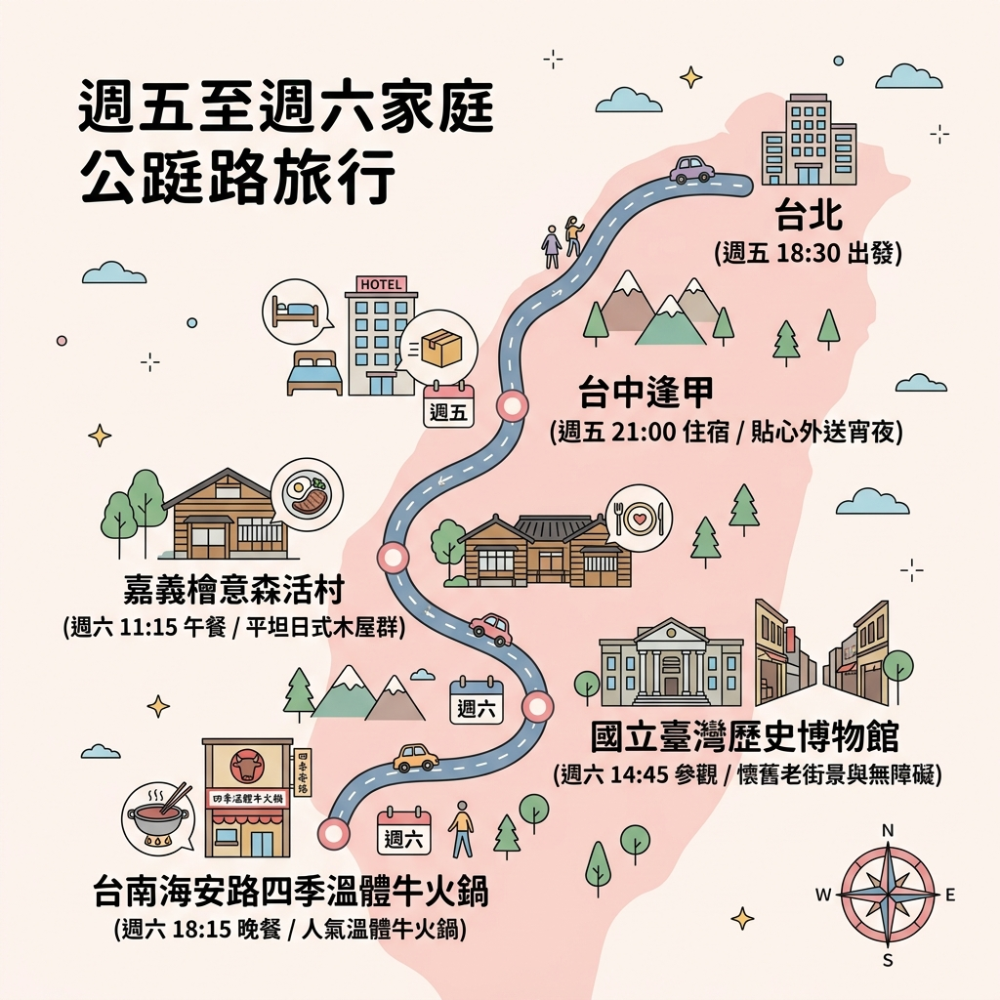
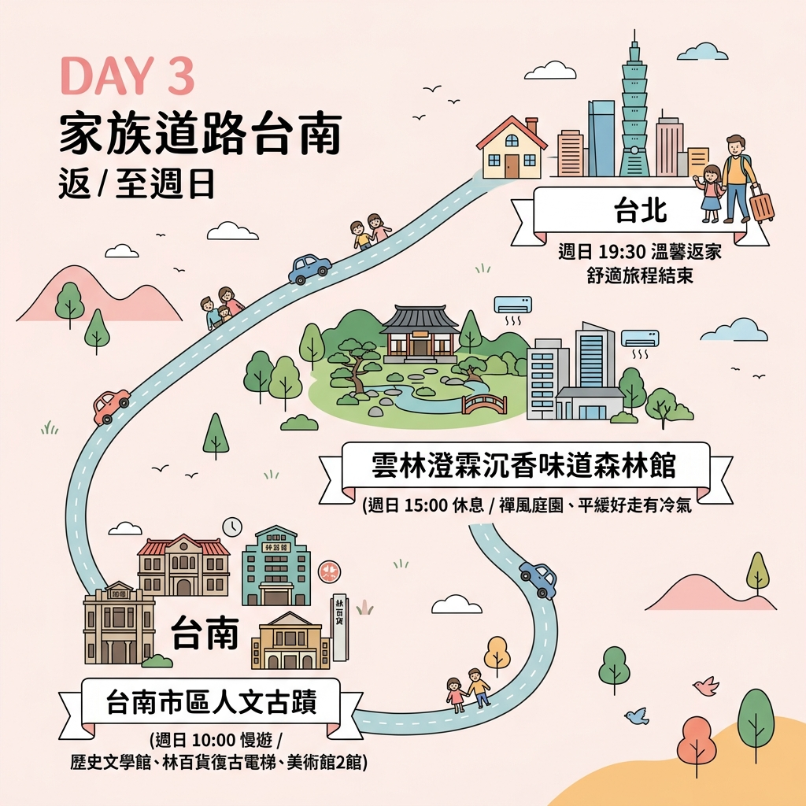

🗺️ 行程路線視覺圖
📅 第一天 & 第二天 (週五、週六)

📅 第三天 (週日)

📅 詳細行程表
Day 1：週五 ➔ 台北出發前往台中
⏰ 18:30 - 21:00
台北出發前往台中逢甲
📍 導航至逢甲商圈
驅車前往台中逢甲商圈的飯店辦理入住，展開愉快的週末假期。
💡
長輩貼心提醒： 週五下班路段易塞車，建議中途在湖口或泰安服務區停車讓長輩上廁所、伸展筋骨。
⏰ 21:00 之後
抵達飯店與貼心宵夜
辦理入住手續，稍微整理行李。
⚠️
避開人潮叮嚀： 逢甲夜市人潮極度擁擠、排隊時間長。為了避免長輩站立過久，建議長輩在飯店休息，由年輕人代表去外帶在地美食（如明倫蛋餅、按摩雞排）回飯店享用，或選擇飯店周邊環境安靜的質感餐廳。
Day 2：週六 ➔ 嘉義人文中繼 ➔ 台南牛肉火鍋
⏰ 10:00 - 13:45
中繼站：嘉義檜意森活村 (享用午餐)
📍 導航至檜意森活村
早上 10:00 從逢甲飯店退房出發，車程約 1 小時 15 分鐘。抵達嘉義後，在充滿日式懷舊風情的檜意森活村悠閒散步。
🌳
景點特色： 全台最大日式木造建築群，園區地勢平坦、無階梯與高低起伏，非常適合長輩慢步。
🍴
午餐建議： 推薦在園區內的日式老屋「森咖啡 Morikoohii」享用輕食，或驅車 5 分鐘前往有冷氣且方便停車的「民主火雞肉飯」品嚐在地美食。
📍 導航至民主火雞肉飯
⏰ 14:45 - 17:00
國立臺灣歷史博物館
📍 導航至歷史博物館
車程約 50 分鐘。前往位於台南安南區（臨近永康）的歷史博物館，館內展示臺灣歷史常民文化，有許多早期雜貨店、舊車站街景的精彩擬真重現。
🏛️
人文與無障礙特色： 全館強冷氣開放，動線極寬敞平緩。館內有許多懷舊舊物能喚起長輩的青春回憶。館內服務台可免費登記借用輪椅，設有充足的無障礙電梯與洗手間。
⏰ 17:00 - 20:15
永康飯店 Check-in ➔ 海安路四季溫體牛肉火鍋
📍 導航至四季溫體牛肉火鍋
17:00 離開博物館，先回永康區的飯店 Check-in，讓長輩稍微休息、洗把臉。17:40 出發前往中西區海安路。
🍲
美食特色 (已訂位 18:15)： 享用台南指標性的溫體牛肉火鍋！沙茶扁魚湯底鮮美，溫體牛肉肉質極嫩，非常營養好入口。
🚗
停車與電梯動線： 導航並將車輛停入「海安路地下停車場」（海安路二段）。停車場非常寬廣且車位多，內設有無障礙電梯，可直接搭乘電梯至地面層，出電梯後僅需步行 2-3 分鐘即可抵達餐廳，完全不費力。
📍 導航至海安路地下停車場
Day 3：週日 ➔ 台南市區人文慢遊 ➔ 古坑咖啡下午茶 ➔ 台北
⏰ 10:00 - 12:30
早上 9:30 退房後前往中西區古蹟人文區（車程約 20 分鐘）。這三個地標均在步行 3 分鐘範圍內，可依長輩體力自由搭配：
1. 國立台灣文學館：巴洛克風格百年古蹟，室內冷氣舒適、動線平緩且設有許多長輩休息座椅。
2. 林百貨：全台最老百貨，可搭乘復古指針電梯直達頂樓看神社，並購買台南精緻伴手禮。
3. 台南市美術館 2 館：白色現代美學建築，無障礙設施與電梯規劃極佳，適合散步看展。
1. 國立台灣文學館：巴洛克風格百年古蹟，室內冷氣舒適、動線平緩且設有許多長輩休息座椅。
2. 林百貨：全台最老百貨，可搭乘復古指針電梯直達頂樓看神社，並購買台南精緻伴手禮。
3. 台南市美術館 2 館：白色現代美學建築，無障礙設施與電梯規劃極佳，適合散步看展。
⏰ 12:30 - 14:00
午餐：台南老字號精緻台菜
📍 導航至筑馨居
品嚐台南在地精緻的老屋辦桌菜或台菜料理。
🏮
推薦店家（需預訂）： 推薦「筑馨居」的無菜單辦桌菜（百年老厝，食材軟嫩、口味經典且清淡不油膩）或「阿美飯店」的經典台菜，都是長輩會非常喜歡的口味。
⏰ 15:10 - 16:15
中繼站：雲林古坑華山咖啡大街
📍 導航至華山咖啡大街
吃飽後開始北返，車程約 1 小時 10 分鐘抵達雲林古坑。在咖啡的故鄉稍作停留，喝杯在地香醇的古坑咖啡，吹著山風，欣賞山景與綠意。
☕
景點特色： 舒適的林蔭山景下午茶，是北返路上絕佳的放鬆與如廁站點。
⚠️
防爬坡小撇步： 華山地區多斜坡。請直接將車子開至挑選好的景觀咖啡廳門口讓長輩下車入座，之後駕駛再去停妥車輛，以避免長輩徒步攀爬斜坡。
⏰ 16:15 ➔ 19:45
啟程返回台北
驅車回台北（中途可依長輩需求停靠西湖服務區），回到溫暖的家，結束這趟不費體力又充滿人文底蘊的台南輕旅行。
💡 隨行長輩貼心叮嚀
防曬與水份補充
南部白天陽光較強，請隨身攜帶陽傘、帽子或長袖遮陽防曬，並鼓勵長輩隨時補充水份，以防脫水或中暑。
免付費無障礙設施
「國立臺灣歷史博物館」與「台南市美術館2館」皆設有完善無障礙通道，並提供免費輪椅登記借用。若長輩步行較累，建議多加利用。
定時上洗手間
每次車程皆安排在 1 至 1.5 小時內，於中繼點或國道服務區（如泰安、西螺、新營服務區）請務必提醒長輩下車如廁與活動關節。
海安路地下街停車祕訣
海安路地下停車場覆蓋整條海安路二段。請選擇靠近「四季牛肉火鍋」餐廳（約在37、38號出口附近）的車位停靠，並使用無障礙電梯直達路面，最為省力。